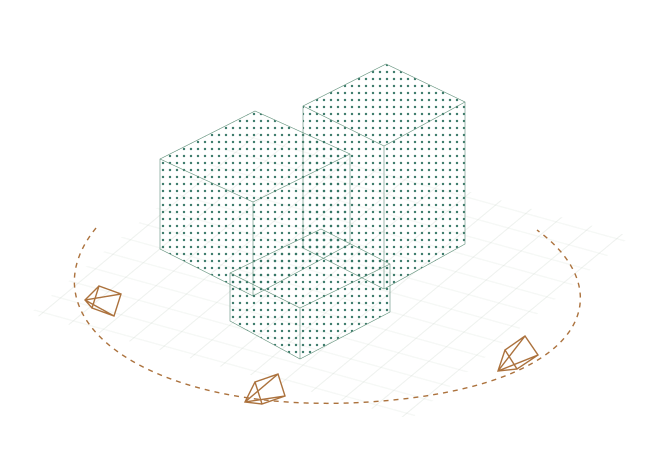
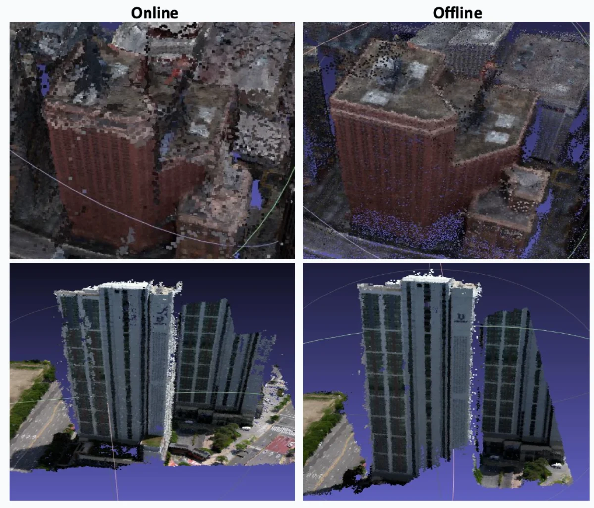
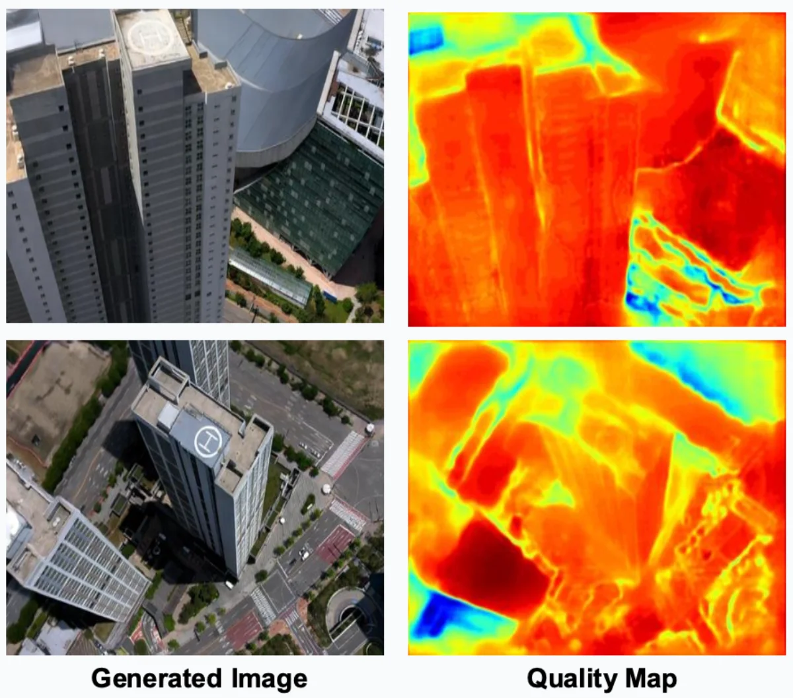

Geometry & depth
Multi-view stereo and monocular depth priors for complete, consistent scene geometry.
BYEONG GWON LEE / 이병권
3D Reconstruction · Gaussian Splatting · SLAM · Multi-View Stereo
Turning images into geometry.
I work on depth, mapping, and 3D reconstruction.
KETI Researcher · Sep. 2026 – Present
Illustrative 3D reconstruction: building surfaces are represented by a point cloud, surrounded by camera frustums along a curved capture trajectory. The density slider changes sparse samples into denser surface coverage. This is an illustration, not an experimental result.

01 / RESEARCH FOCUS
Connecting learned visual priors with
the structure of multi-view geometry.
Multi-view stereo and monocular depth priors for complete, consistent scene geometry.
SLAM and camera pose estimation connecting image sequences to spatial understanding.
3D Gaussian Splatting and view selection for detailed, online scene reconstruction.
THE RESEARCH PIPELINE
02 / SELECTED PUBLICATIONS

Selecting informative views to improve the completeness of online 3D Gaussian Splatting models.

Bringing dense multi-view geometry into online Gaussian Splatting for high-quality 3D mapping.

Integrating stereo depth estimation into online Gaussian Splatting mapping.
03 / FEATURED PROJECTS

Mobility One Inc. · Oct. 2024 – Apr. 2025
Combine SLAM camera tracking with multi-view stereo in an online/offline reconstruction pipeline.
Explore the project
Mobility One Inc. · Jun. 2025 – Dec. 2025
Use COLMAP and OpenMVS with diffusion-based image interpolation and inpainting.
Explore the projectEXPERIENCE
Sep. 2026 – Present
Researcher
Jul. 2026 – Jul. 2026
Researcher
May 2026 – Jul. 2026
Researcher
Sep. 2022 – Feb. 2024
2D Computer Vision Researcher
Manufacturing defect detection, image segmentation, model optimization, and few-shot auto labeling. Progressed from research intern to data scientist.
EDUCATION
Mar. 2024 – Feb. 2026
M.S. in Computer Science and Artificial Intelligence
Advisor: Prof. Soohwan Song
Thesis: Online 3D Gaussian Splatting Modeling with Novel View Selection
Mar. 2020 – Feb. 2023
B.S. in Software Engineering
LET’S CONNECT
For research discussions and collaborations in 3D vision.